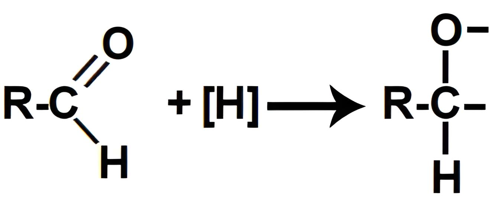

Reações orgânicas de redução são fenômenos químicos utilizados para a obtenção de álcoois ou aminas, a partir da reação de compostos oxigenados ou nitrogenados com hidrogênios nascentes.
Mas
hoje iremos falar de uma redução expecífica:
Antes de falarmos sobre a Redução de Aldeídos, é importante citar o que realmente é uma Reação de Redução.
São fenômenos químicos que ocorrem em compostos orgânicos oxigenados e nitrogenados, onde sofrem um ataque de átomos de hidrogênio (H2(g)) e o catalisador níquel (Ni(s)). É o que acontece em nossa Redução de Aldeídos. Quando os hidrogênios nascentes são colocados no mesmo recipiente que um aldeído, atacam a ligação pi presente na carbonila, rompendo essa ligação e formando duas valências livres (uma no carbono e outra no oxigênio).
Em seguida, cada uma das valências livres criadas é preenchida por átomos de hidrogênios nascentes ([H]), dando origem a um álcool.
Manual da Química: https://www.manualdaquimica.com/quimica-organica/reacoes-organicas-reducao.htm#
Prepara Enem: https://www.preparaenem.com/quimica/reacoes-reducao-aldeidos-cetonas.htm